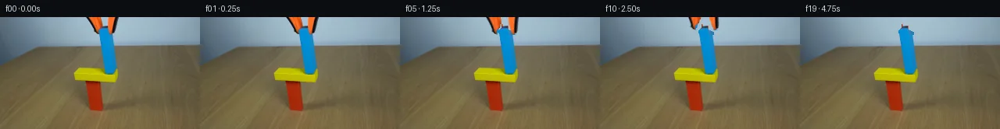

![首帧]()

Round 00
2026-11-05T14:06:59.157206+00:00像素候选变化代码 +247/−0inspection 更新
pixels 99d6395758d1641d · code d47177e23cc6c4e6
查看本轮 generate.py 真实 diff
--- previous/generate.py
+++ current/generate.py
@@ -0,0 +1,247 @@
+#!/usr/bin/env python3
+"""Generate the 20-frame PixelWorld continuation from first_frame.png.
+
+The source is handled strictly as an RGB array. The camera and all blocks stay
+fixed; only the two jaws at the top of the frame are analytically warped.
+"""
+
+from pathlib import Path
+import hashlib
+
+import cv2
+import numpy as np
+from PIL import Image, ImageDraw, ImageFont
+
+import artifact_io
+
+
+ROOT = Path(__file__).resolve().parent
+W, H = 256, 144
+
+
+def polygon_mask(points):
+ image = Image.new("L", (W, H), 0)
+ ImageDraw.Draw(image).polygon(points, fill=255)
+ return np.asarray(image, dtype=np.float32) / 255.0
+
+
+def hsv_arrays(rgb):
+ hsv = cv2.cvtColor(rgb, cv2.COLOR_RGB2HSV)
+ return hsv[..., 0].astype(np.float32) * 2.0, hsv[..., 1], hsv[..., 2]
+
+
+def fitted_wall(rgb):
+ """Fit the smooth top-wall gradient from clean samples beside the tool."""
+ yy, xx = np.mgrid[0:H, 0:W]
+ sample = (yy <= 31) & (((xx >= 68) & (xx <= 104)) | ((xx >= 158) & (xx <= 196)))
+ xn = (xx - 132.0) / 64.0
+ yn = yy / 32.0
+ features = np.stack(
+ [np.ones_like(xn), xn, yn, xn * xn, xn * yn, yn * yn], axis=-1
+ )
+ a = features[sample]
+ result = np.empty_like(rgb, dtype=np.float32)
+ for channel in range(3):
+ values = rgb[..., channel].astype(np.float32)[sample]
+ keep = np.ones(len(values), dtype=bool)
+ coef = np.zeros(6, dtype=np.float64)
+ # Two robust passes suppress isolated compression/texture outliers.
+ for _ in range(2):
+ coef, *_ = np.linalg.lstsq(a[keep], values[keep], rcond=None)
+ residual = np.abs(a @ coef - values)
+ limit = max(4.0, float(np.percentile(residual, 88)))
+ keep = residual <= limit
+ result[..., channel] = np.tensordot(features, coef, axes=([-1], [0]))
+ return np.clip(np.rint(result), 0, 255).astype(np.uint8)
+
+
+def make_clean_scene(source, left_shape, right_shape):
+ """Remove the original jaws and reconstruct only their occluded pixels."""
+ erase = np.maximum(left_shape, right_shape) > 0.0
+ wall = fitted_wall(source)
+ clean = source.copy()
+ clean[erase] = wall[erase]
+
+ hue, sat, val = hsv_arrays(source)
+ visible_blue = (
+ (hue >= 175.0)
+ & (hue <= 245.0)
+ & (sat >= 125)
+ & (val >= 75)
+ & (np.indices((H, W))[1] >= 123)
+ & (np.indices((H, W))[1] <= 152)
+ & (np.indices((H, W))[0] <= 74)
+ )
+
+ # Estimated hidden cuboid silhouette, derived from per-row blue scan runs.
+ block_shape = polygon_mask([(132, 12), (145, 19), (146, 72), (135, 73), (126, 17)]) > 0
+ hidden_blue = erase & block_shape
+
+ # Nearest valid source sample keeps the original blue shading/wood texture.
+ # OpenCV's label-producing distance transform gives an exact local source
+ # index without any external model or reference image.
+ inv = (~visible_blue).astype(np.uint8)
+ _, labels = cv2.distanceTransformWithLabels(
+ inv, cv2.DIST_L2, 5, labelType=cv2.DIST_LABEL_PIXEL
+ )
+ coords = np.argwhere(visible_blue)
… diff truncated; 160 more lines …